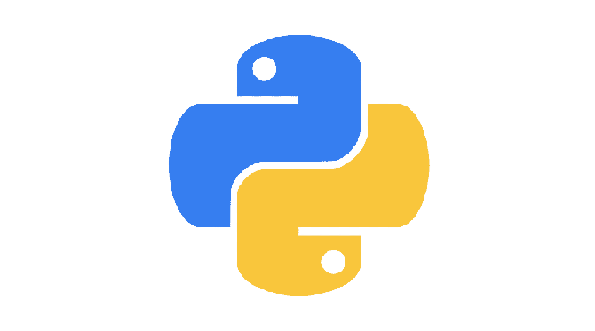

História do Python
A história do Python começa com Guido Van Rossum a iniciar o seu desenvolvimento em 1989 e a começar a implementá-lo em fevereiro de 1991, altura em que foi lançada a primeira versão pública: 0.9.0.A versão 1.0 foi lançada em janeiro de 1994, a versão 2.0 foi lançada em outubro de 2000 e a versão 3.0 foi lançada em dezembro de 2008.
A primeira versão do Python já incluía classes com heranças, tratamento de exceções, funções e uma das suas características fundamentais: funcionamento modular. Isto permitiu que fosse uma linguagem muito mais limpa e acessível para pessoas com poucos conhecimentos de programação. Uma característica que permanece até hoje.
Até 2018, o desenvolvimento desta popular linguagem de programação era liderado pessoalmente por Van Rossum, mas ele decidiu afastar-se e, desde 2019, são cinco pessoas que decidem como evolui e se desenvolve Python. Um conselho que é renovado anualmente.
Quando foi lançada a primeira versão definitiva do Python, a popularidade desta nova linguagem de programação era tal que foi criado o comp.lang.python, um fórum de discussão Python que multiplicou ainda mais o seu número de utilizadores.